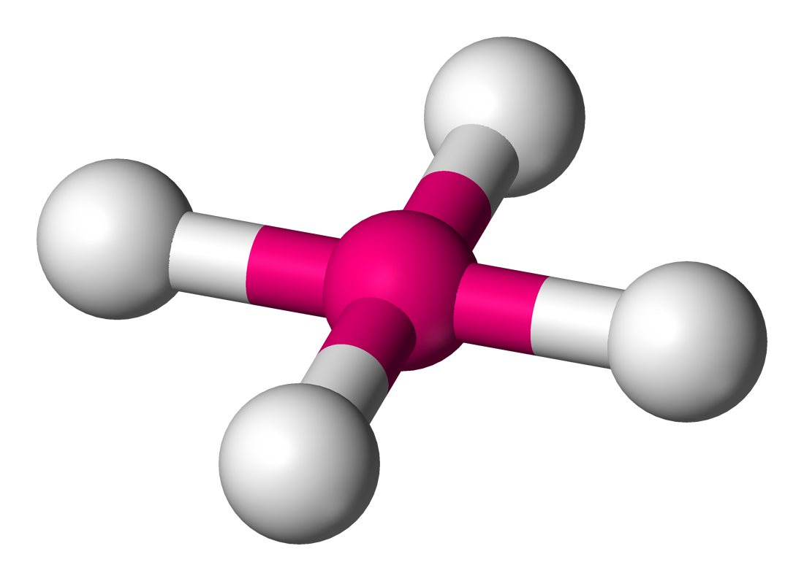
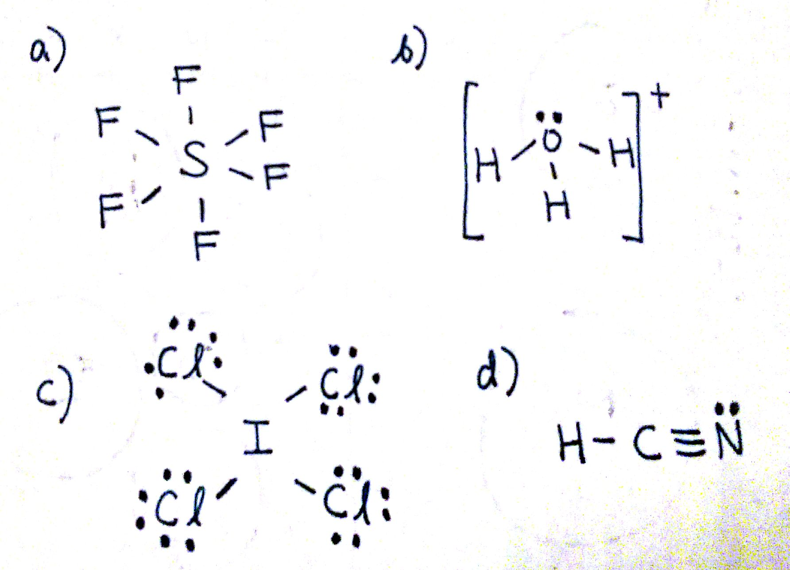

Valence Shell Electron Pair Repulsion (VSEPR) is a theory that states that the 3d orientation, also known as the molecular geometry, of a molecule is not dependent on its chemical formula but on the repulsion of valence electrons. In other words, two molecules with the general formulas `AB_3` may look completely different in real life: one may be a pyramid whereas the other may be completely flat. This is the case of `BF_3` and `NH_3`: both have the general formula `AB_3`, but `NH_3` on the left is a tri-pod shape whereas `BF_3` on the right is a 3-legged starfish shape.
The reason behind this is that the two structures have a different number and arrangement of valence electrons. Molecular geometry is determined by the arrangement of valence electrons.
Take a look at the Lewis structures of `NH_3` and `BF_3`. The only difference is the number of electrons on the central atom: N has a lone pair whereas B does not. The basic idea behind VSEPR is that electron pairs will repel each other. This is why `NH_3` has a tri-pod shape: the lone pair on top of N pushes the other electrons (in the bond) away from it. The lone pair is usually not shown in 3d models and thus you have to visualize it yourself.
One key point is that lone pairs take up more room than single bonds do. If you substitute a single bond with a lone pair, the lone pair will repel the other electron groups away from it more than the single bond would. This will become important when discussing bond angles.
The following chart provides the different molecular geometries and the conditions in which they arise. We're going to discuss each one individually, but note that you can determine the molecular geometry of a molecule solely by the number of bonds and lone pairs around the central atom.
Let's say you had the formula of water, `H_2O`, and wanted to know its molecular geometry.
The central O atom has 4 groups of electrons around it: 2 bonds and 2 unpaired electrons, also called lone pairs. If we look up at the table, we can find on the left side a column for molecules with 4 electrons groups, and within that group a molecule with 2 lone pairs. The molecular geometry for a water molecule is bent, which is why the water molecule isn't a straight H-O-H molecule. The molecular geometry chart may seem like a lot of information at first, but over time it will become intuitive. You'll see that the chart follows a very straightforward pattern of logic.
One brief thing to take note of is that there are multiple linear and bent geometries. They will have different numbers of bonds and lone pairs, but the end result will be the same. For example, both molecules with 2 bonds and 0 lone pairs and 2 bonds and 3 lone pairs will be linear. From all outward appearances, they will look identical however.
Now let's go over the geometries in terms of the number of electron pairs:
This group consists only of the linear geometry. Linear geometries occur when there are only 2 bonds and 0 lone pairs. Examples include `BeH_2`

Notice that there will be several different linear geometries. All linear molecules share the property that they are completely straight i.e the bond angle from one bond to another is `180^@`.
This group consists of trigonal planar molecules and bent molecules. We've gone over examples of these two: `BF_3` is a trigonal planar molecule whereas water is a bent molecule.
In a trigonal planar molecule, there are 3 bonds and 0 lone pairs, with bond angles of `120^@`. In bent molecules, the bond angle is slightly less than `120^@`. This is because lone pairs take up more room than single bonds do. Therefore, the lone pair in a bent molecule takes up more room than the 3rd bond in a trigonal planar molecule does, thereby reducing the angle to slightly less than `120^@`.
This group consist of tetrahedral, trigonal pyramidal, and bent geometries.
The tetrahedral geometry exists when there are 4 bonds and 0 lone pairs. This is one of the most important and common geometries, as many molecules will adopt this. For example, `CH_4` adopts a tetrahedral geometry (left). The bond angle for tetrahedral molecules is approximately `109.5^@`.

The trigonal pyramidal geometry exists when there are 3 bonds and 1 lone pair. This is seen in ammonia (right). The bond angle for trigonal pyramidal geometries is less than `109.5^@` due to the additional repulsion from the lone pair. The single lone pair sits on top of the molecule where the 4th bond in the tetrahedral structure is.
The final 4 electron group geometry is the bent geometry. This occurs when there are 2 bonds and 2 lone pairs. Note that this is the same general geometry as the bent molecule in the 3 electron group, but consists of a different number of electron pairs. A common example of a bent molecule is the water molecule (left).
The 5 electron group consists of the trigonal bypyramidal, see-saw, T-shaped, and linear geometries.
The trigonal bipyramidal, abbreviated TBP, is found when there are 5 bonds and 0 lone pairs (right). There are two different regions of bonds in TBPs: the axial and the equitorial. The 2 axial bonds lay along the axis, whereas the 3 equitorial lay on the "equator" of the molecule. The bond angle between the 2 axial bonds is `90^@` whereas the angle between the 3 equitorial bonds is `120^@`. The angle between each equitorial and axial bond is `90^@`. You can think of a TBP as a combination of a trigonal pyramidal on the equitorial and a linear molecule on the axial.
The See-Saw geometry (It vaguely resembles a see-saw) occurs when there are 4 bonds and 1 lone pair (left). Just like the TBP, the see-saw has equitorial and axial regions. The linear (straight) portion is the axial whereas the portion with the bent bonds is the equitorial. The equitorial bond angles are slightly less than `90^@` and the axial bond angles is slightly less than `120^@`. This is because of the added repulsion from the lone pair, which is located on the equitorial position where the normal 3rd bond would be.

The T-Shaped geometry occurs when there are 3 bonds and 2 lone pairs (right). The bond angle between all of the bonds is slightly less than `90^@` due to the added repulsion from the lone pairs. The lone pairs sit where the other 2 equitorial bonds usually would.
The last geometry of this number of electron pairs is the linear geometry. This geometry occurs when there are 2 bonds and 3 lone pairs, and looks indistinguishable from the other linear geometries. The bond angle between the two bonds is `180^@`.
The 6 electron group geometries consist of the octahedral, square pyramidal, and square planar geometries.
The octahedral geometry (right) occurs when there are 6 bonds and 0 lone pairs. The bond angles is `90^@` between all bonds. The octahedral geometry is a very common geometry alongside the tetrahedral.
The square pyramidal has 5 bonds and 1 lone pair. The 1 lone pair sits on the "bottom" of the molecule (reference left diagram) and causes a repulsion of the rest of the bonds. The result is that the bond angles are all slightly lower than `90^@`.

The last geometry is the square planar which is just 4 bonds and 2 lone pairs (right). The two lone pairs sit on "top" and "bottom" of the molecule, effectively balancing each other out. This results in the bond angles being exactly `90^@`.
Structures
Most of the time, you'll be determining the molecular geometry from the Lewis structure. It is therefore important to be able to determine the molecular geometry from a 2D Lewis structure. The most important thing is to count the number of bonds and lone pairs (Note that double and triple bonds are counted as one set of bonds. Once you do this, you can simply consult a chart like the one above.
Here's a simulation to play with so that you can visualize each shape. Click and Model and enable lone pairs and bond angles and try to construct each of the different geometries. Afterwards, go to real molecules and check out a few of the molecules and their geometries. See if you can draw out the Lewis structures for the molecules and try identifying their geometries.
Here are some Lewis structures to practice with:
#1. Identify the molecular geometry of the following molecules by counting all sets of bonds and lone pairs.

a) 6 bonds, 0 lone pairs. Octahedral.
b) 3 bonds, 1 lone pairs. Trigonal Pyramidal.
c) 4 bonds, 0 lone pairs. Tetrahedral.
d) 2 bonds, 0 lone pairs. Linear.
#2. Identify the molecular geometry of the following molecules.
a) Each C has 1 bond and 0 lone pairs: Linear.
b) 4 bonds, 0 lone pairs. Tetrahedral. Note that the molecules around the central C differ, but this does not affect the molecular geometry.
c) 3 bonds, 0 lone pairs. Trigonal planar.
d) 5 bonds, 1 lone pair. See-saw
e) Each P has 3 bonds and 1 lone pair. The molecular geometry around each P is trigonal pyramidal.
f) 2 bonds, 1 lone pair. Bent
g) 4 bonds, 0 lone pairs. Tetrahedral
h) 3 bonds, 2 lone pairs. T-shaped
i) 4 bonds, 2 lone pairs. Square Planar
You may come across questions asking for the electron geometry as opposed to the molecular geometry. In electron geometry, both bonds and lone pairs are considered the same. In other words, any molecule with 4 groups of something, be it 3 bonds and 1 lone pair or 2 bonds and 2 lone pairs, will have the same electron geometry.
Electron geometry is just a simplified molecular geometry. A brief example can be ammonia, which has 3 bonds and 1 lone pair. In molecular geometry, ammonia would be a trigonal pyrimidal. In terms of electron geometry, ammonia is a tetrahedral molecule because there is no distinguishment between the bonds and the lone pair.
Arrangements such as trigonal pyramidal or square planar don't exist when discussing electron geometry because those structures require the counting of lone pairs. The only electron geometries that exist are linear, tetrahedral, trigonal bypyramidal, and octahedral structures. Let's end with a quote:
"There is a beauty in discovery. There is mathematics in music, a kinship of science and poetry in the description of nature, and exquisite form in a molecule."
- Glenn Seaborg
VSEPR states that the 3D orientation of a molecule is dependent solely on its electron arrangement.
The 2 factors that contribute to molecular geometry are the number of bonds and the number of lone pairs.
Lone pairs take up more space than bonds do.
Electron geometry takes away the distinguishment between bonds and lone pairs. Both are counted as the same thing.